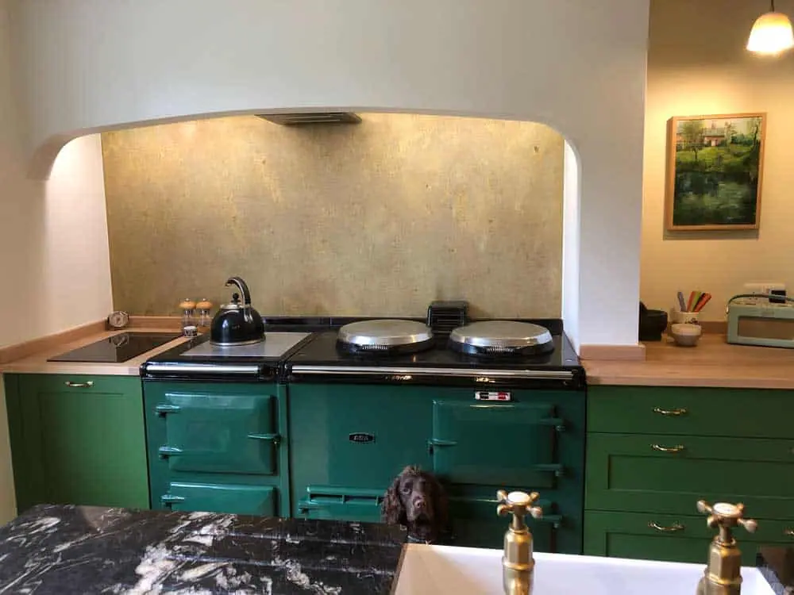

Brass is a kitchen design superstar for plenty of reasons: apart from its dazzling good looks, this metal won’t rust, and is resistant to moisture and heat. And there’s way more to brass than just plain old gold (not that there’s much plain about gold); thanks to our bespoke aging processes, you can choose precisely the brass aesthetic to match your kitchen theme. Looking for classic gold with a matte, brushed finish? No problem, our Cambridge mill-finish brass is just the job. Prefer something pre-patinaed, with unique, crackled patterns? See our Somerset finish stained-glass aged brass . Whether you want to drop a hint of glamour with a few brass accessories or go fully golden with large panels of brass, you’ll find that this much-loved metal can make a striking difference to one of the most important rooms in your house. Here’s some inspiration for you to enjoy…
1. Easy does it
Thinking of adding brass to your existing kitchen design but unsure how it’ll look? Start slowly by experimenting with removable accessories. Introduce brass cutlery, bowls or picture frames. Even ‘boring’ kitchen essentials such as dish drainers and bins can be bought in a brass finish. These brass trivets from Japanese designer Futagami will save your surfaces from hot pots and look pretty too.
2. Brass on tap
Ready to commit a little more? Brass taps give any kitchen a rich, vintage feel and are an instant step-up from dated chrome. Use matching brass handles and hinges on cupboards to tie the theme together.
3. A splash of brass
An aged brass splashback in our Wiltshire finish , looking gorgeous against green. Cute spaniel not included.
Sometimes a full kitchen refit just isn’t an option, and that’s where splashbacks come in. One of the quickest and easiest ways to update the look of your kitchen is with the simple addition of a brass splashback . Not only will it transform your room, it’ll protect the walls from moisture and spillages. Install behind sinks, stoves or along worktops. Of course, you can also introduce splashbacks as part of a full kitchen refurb.
4. Kitchen s ink drama
Really into the brass aesthetic? We don’t blame you! Go one step further than brass taps and install a gorgeous brass sink in your kitchen. We love the handy towel rail that comes with this one. Note the complementary light fitting in the background and the handles on the cupboard doors. Brass looks really good against this deep, midnight blue, too.
5. Top tier worktops
Bring even more brass into your kitchen by installing brass worktops . Brass is often used for bar-tops in the hospitality industry, and makes a stunning addition to home kitchen counters too. It’s easy to go for more obvious materials like wood or stone, but using metal for your counter-tops makes for truly breathtaking (and practical) finish. Browse our range of custom-made brass worktops , available in both classic brass and aged brass designs.
6. More is more
Who says metal splashbacks are just for behind stoves and sinks? Choose an extra-long section of splashback, in natural brass or aged, for maximum impact (and protection of walls). Also note how great the brass looks here with these modern pink and blue shades.
7. Cupboard love
Go all-out glam and clad your cupboard doors in brass. Our cladding is available in a wide range of finishes, including natural and aged brass. The combination of pink and peach work brilliantly with the brass here, too, proving that brass looks great with pastels as well as bolder shades.
8. Bright lights
Statement brass light fittings make dazzling focal points in any room, but we love how they can tie in with splashbacks (or here, cupboard doors), to become kitchen centrepieces. We stumbled across hundreds of brass lighting ideas while researching this post, but this industrial-style fitting is one of our favourites.
9. If walls could talk
OK, so you’ve decided on brass cupboard doors, brass splashbacks, brass taps and brass worktops… how else can you incorporate this gorgeous gold shade into your kitchen design? With the walls, of course! Our brass cladding lets you add even more gold-coloured metal to your kitchen, whether you want to use it for a feature wall or add as much brass as you possibly can.
10. Grand island
The focal point of any modern kitchen is its island, and this one, clad in brass, is beautiful. Brass might not strike you as a metal that can work with a minimalist aesthetic, but here, with the dark wood and simple stools, the overall effect is both calming and highly stylish. However you want to use brass, contact Halman Thompson and let us help you create the kitchen of your dreams.


If you can dream it, we’ll make it.
Bars, balustrades, staircases, worktops, cladding and pieces that don’t have a name yet. Our designers and craftspeople work in brass, copper, zinc and steel, and alongside wood.